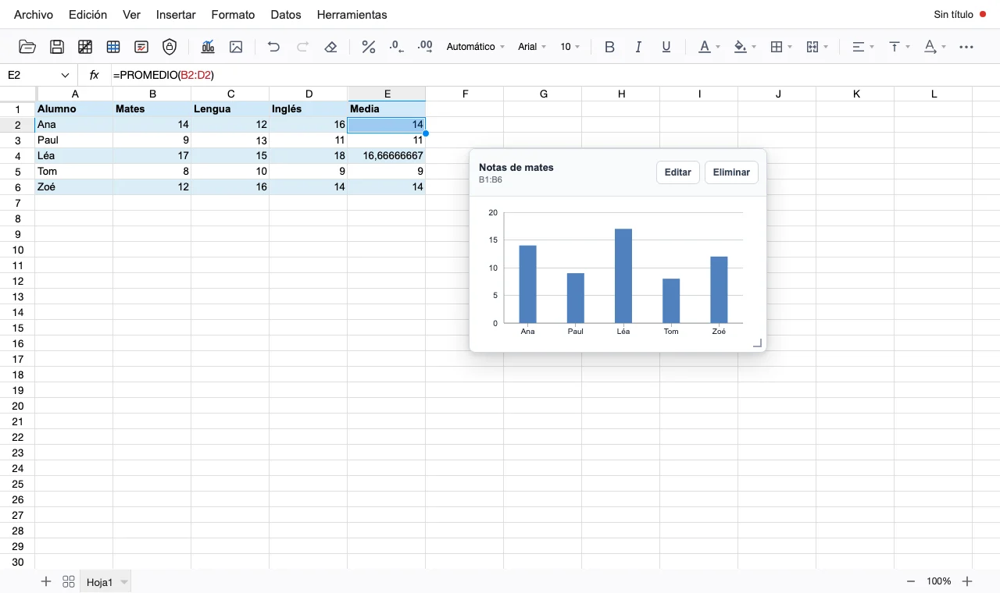
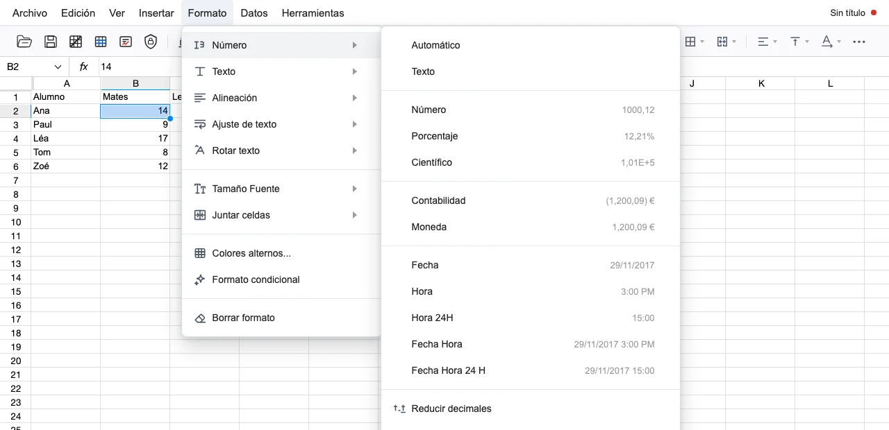

La interfaz

De arriba abajo: la barra de menús, la barra de botones, la barra de fórmulas, la hoja, las pestañas de hojas y el zoom.
Los menús
| Menú | Contenido |
|---|---|
| Archivo | abrir, guardar, imprimir |
| Edición | deshacer, rehacer, rellenar hacia abajo, hacia la derecha |
| Ver | cuadrícula, inmovilizar |
| Insertar | imagen, gráfico, casilla, lista desplegable |
| Formato | número, texto, alineación, combinación, colores alternos, formato condicional |
| Datos | ordenar y filtrar |
| Herramientas | proteger, este manual (Manual de usuario), DocTools, código fuente, versión (Acerca de...) |
Una marca señala una opción activa: cuadrícula visible, celdas inmovilizadas, negrita, filtro, libro protegido.

La barra de botones
| Botón | Función |
|---|---|
| abrir, guardar | |
| mostrar u ocultar la cuadrícula | |
| colores alternos | |
| formato condicional | |
| proteger; azulado cuando el libro está protegido | |
| insertar un gráfico | |
| insertar una imagen | |
| deshacer, rehacer | |
| borrar el formato | |
| porcentaje, menos o más decimales | |
| Automático, Arial, 10 | formato de número, fuente, tamaño |
| negrita, cursiva, subrayado | |
| color del texto, del fondo | |
| bordes, combinación | |
| alineaciones, rotación, ajuste de texto | |
| inmovilizar | |
| suma automática y otras fórmulas | |
| ordenar y filtrar |
La flechita de un botón abre sus opciones; el propio botón repite la última. En una ventana estrecha, los últimos botones están detrás de .
La barra de fórmulas
- A la izquierda, el cuadro de nombres: la dirección de la selección, o el nombre del rango. Su flecha lista los rangos con nombre y abre el administrador de nombres.
- A la derecha de fx, el contenido de la celda, incluida la fórmula: puede modificarse ahí.
La hoja
- El clic derecho abre un menú según el lugar: celda, encabezado de columna o de fila, pestaña de hoja.
- La hoja inicial tiene 84 filas y 60 columnas (A a BH). Se añaden más con el clic derecho, Insertar (filas y columnas).
- El controlador azul de la esquina de la selección rellena.
Pestañas y zoom
Abajo, añade una hoja, las lista todas (las hojas). A la derecha, − y + ajustan el zoom; un clic en el porcentaje propone de 10 % a 400 %.
Deshacer
o Ctrl Z deshace, , Ctrl Y o Ctrl Mayús Z rehace: entradas, pegados, formatos, inserciones. El historial empieza de cero al abrir un libro, al mostrar u ocultar la cuadrícula, al protegerlo, o al añadir un nombre o una regla de formato condicional. Los gráficos no forman parte de él: se modifican o eliminan con sus botones.